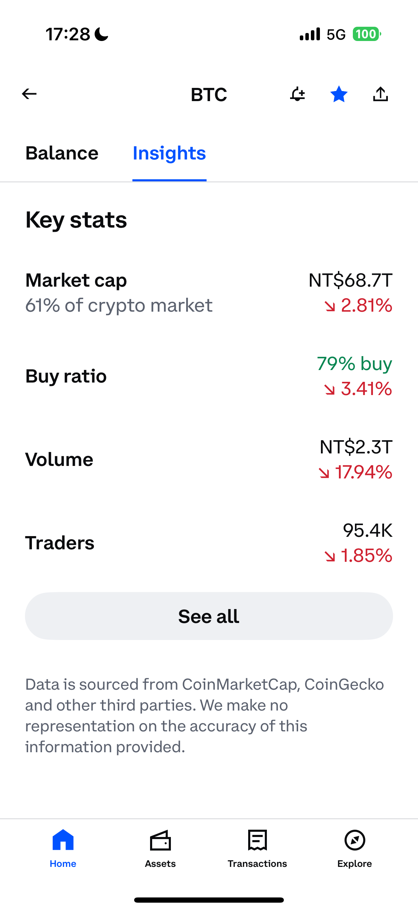

當前問題
Coinbase 在加密貨幣市場中具有領先地位，但根據使用者回饋顯示行動端的交易體驗存在部分問題。使用者經常發現行動端的交易介面視覺雜亂且難以理解，讓執行交易存在磨擦，而投資組合介面資訊呈現不清，使得使用者難以快速理解總餘額、資產分配和成長趨勢。
透過使用者研究，我識別出兩個需要立即改善的功能區塊，分別為投資組合介面和交易介面：
-
投資組合介面 — 數據視覺化不佳
• 缺乏清晰的圖形表示（如圓餅圖或趨勢線）
• 難以快速評估績效趨勢或資產分配
• 使用者參與度低
交易頁面 — 入口點不明確
• 使用者經常不確定如何下單，需要經過多次嘗試才找到下單入口。
• 使用者在解讀交易資訊時需要花較多時間。
作為設計師，我的任務是：重新設計投資組合和交易介面，創造清晰的視覺層次、直觀的使用者流程，以及更易於使用的交易體驗，同時保持 Coinbase 的專業與可信度。

投資組合介面 — 數據視覺化不佳
目前的投資組合介面層次不清，且缺乏視覺提示，讓使用者比較難快速理解資產餘額、分配狀況和資產成長趨勢等，這樣的呈現降低了使用者參與度。


交易介面 — 入口點不明確
在交易頁面上，使用者無法快速進行下單和解讀關鍵的市場資訊，部分使用者需要經過多次的嘗試才能進行下單。